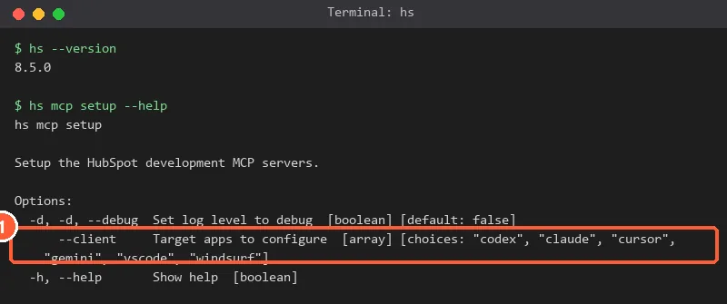
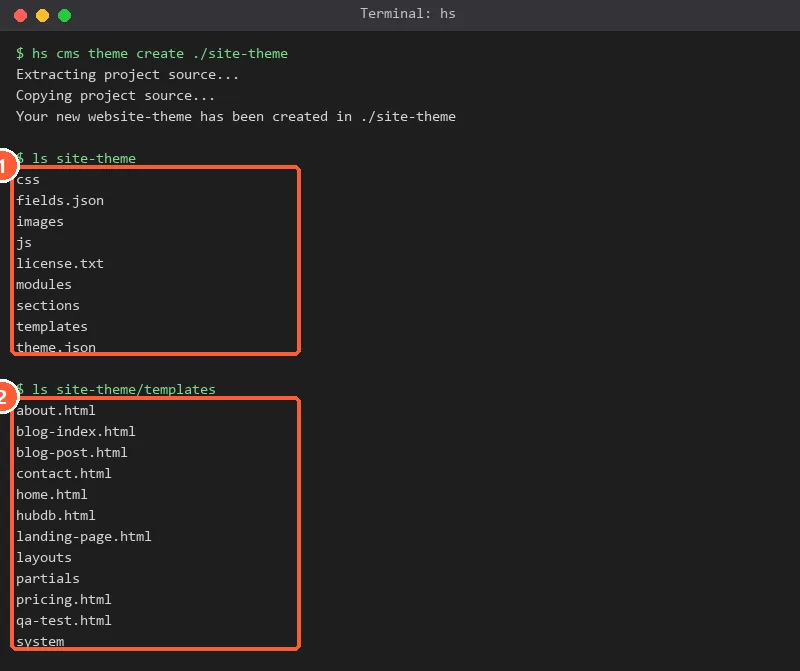
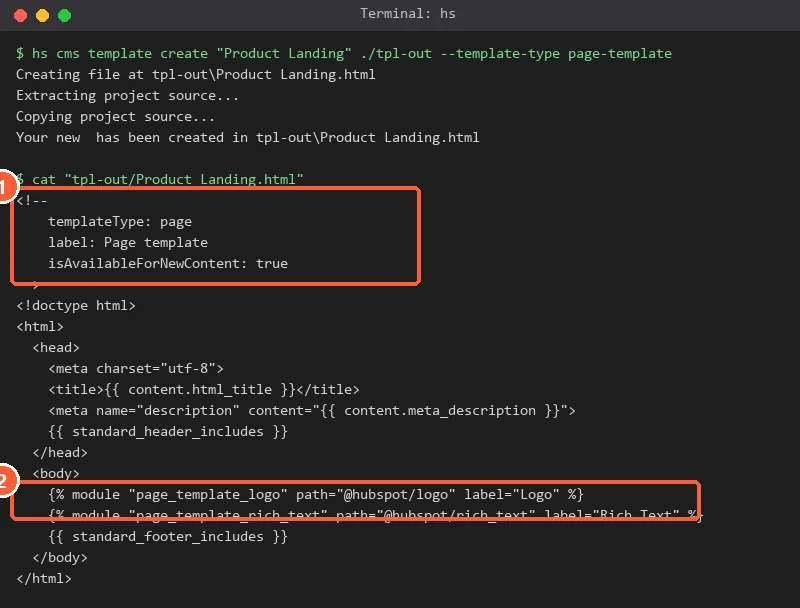
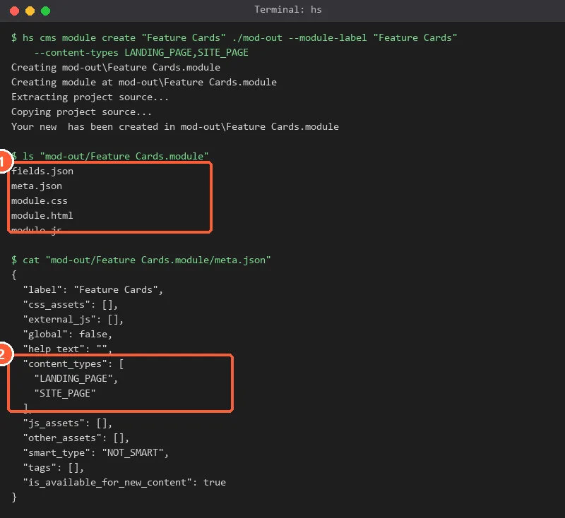
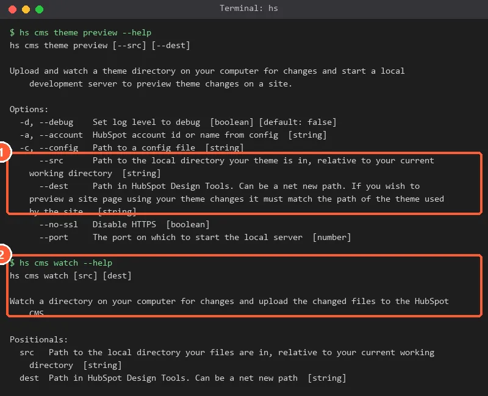
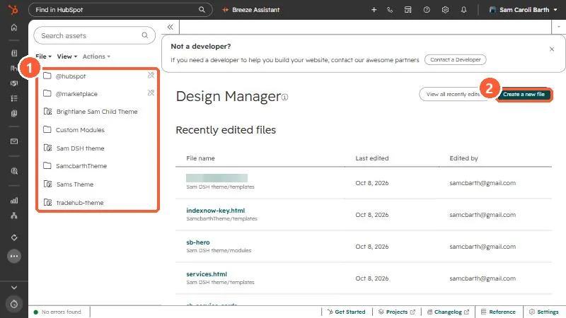
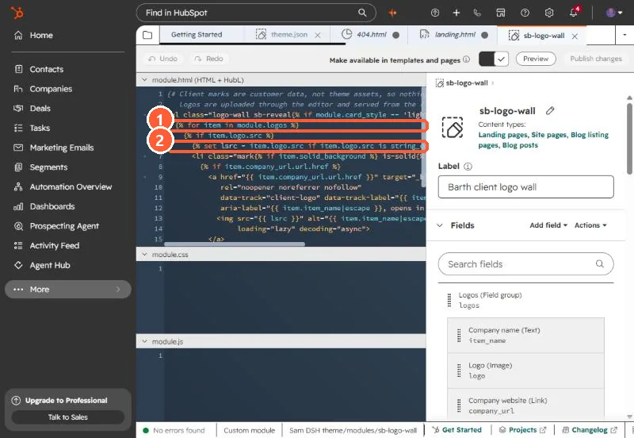
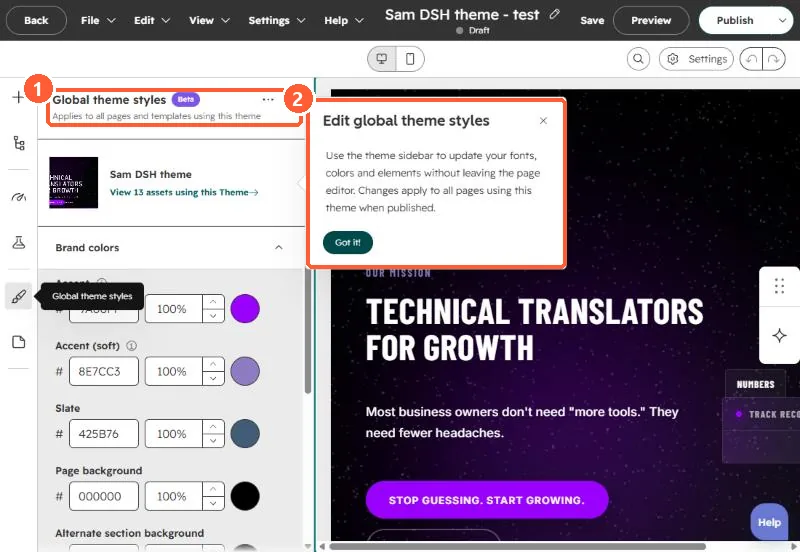
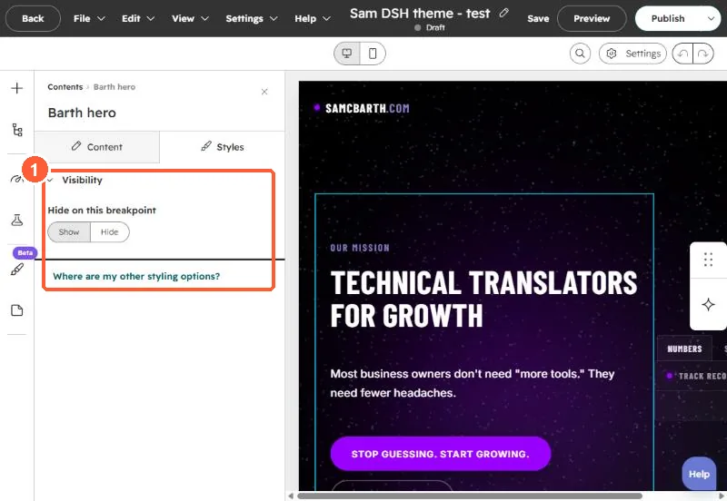
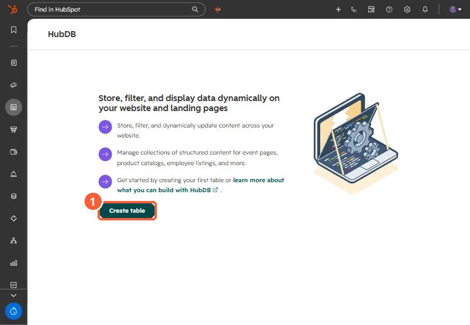

Short answer
Build HubSpot CMS themes locally with the HubSpot CLI (8.2.0 or higher) and, if you use an AI assistant, HubSpot's local developer MCP server (hs mcp setup). Scaffold with hs cms theme create, add templates and modules with hs cms template create and hs cms module create, and upload with hs cms upload or hs cms watch in draft mode first. Expect theme validation to report one class of error per upload. Know three HubL and module rules that bite: variables set inside a loop vanish at endfor, theme fonts are global so per-page control needs module font fields, and serverless functions stop at 10 seconds.
1. CLI and the developer MCP server
HubSpot's developer MCP server runs locally and gives an AI assistant tools for app and CMS work. It needs HubSpot CLI 8.2.0 or higher:
hs --version
npm install -g @hubspot/cli
hs mcp setupPick your client with the arrow keys and space bar. Supported clients include Claude Code, Codex CLI, Cursor, Gemini CLI, VS Code and Windsurf. Standalone mode runs npx @hubspot/cli instead of a global install, for machines that block global npm installs. On my machine, CLI 8.5.0's help shows a --client option for codex, claude, cursor, gemini, vscode and windsurf (1):


In Claude Code, run /mcp and look for HubSpotDev. This local server is for building; it is separate from the remote HubSpot MCP server the Claude connector uses for CRM data, see HubSpot with AI assistants. Its CMS tools include create-cms-template (page, email, partial, global partial, blog listing, blog post, search and section), create-cms-module (HubL or React), create-cms-function, and search-docs and fetch-doc so the agent reads HubSpot's docs before writing code.
2. Scaffold a theme, templates and modules
hs cms theme create ./site-theme made a folder with css, fields.json, images, js, modules, sections, templates and theme.json (1), and starting templates such as home, about, contact, landing-page, pricing and blog (2):


The theme folder did not include a CLAUDE.md or AGENTS.md. HubSpot adds agent context files to projects made with hs project create, hs get-started or the MCP server, so for a theme add your own with brand rules and the commands you want the agent to use.
hs cms template create wrote a page template with a comment header (templateType: page, a label, isAvailableForNewContent: true) (1) and example modules (2):


Some HubSpot command lists still show the older hs create template; in CLI 8.5.0, hs create answered with a hint to use the hs cms ... create form. Coded root templates can show up under Other in the landing page template picker rather than with the theme.
hs cms module create asks for a label, content types and whether the module is available for new content, then writes fields.json, meta.json, module.css, module.html and module.js (1), with the content types in meta.json (2):


3. Upload and preview safely
hs cms upload <src> <dest> uploads once; hs cms watch <src> <dest> uploads as you save. Both take --cms-publish-mode draft or publish, and hs cms theme preview uploads, watches and starts a local preview server (1, 2):


- Start in draft mode and check the result in Design Manager before publishing.
hs cms upload --cleandeletes the destination folder first, including global content for global partials and modules.hs cms watch --removedeletes files in HubSpot that are not found locally.- Upload to a fresh folder while experimenting, and tell your AI assistant to upload only when you ask.


4. Theme upload validation errors
HubSpot will not validate a theme until every rule passes, and it reports one class of error at a time. Building a theme with fifteen templates and eleven modules, it took me six uploads. The errors, quoted from my own upload output, in the order I hit them:
- Field name cannot be
label. Reserved word. email_backup_unsubscribeis not a valid template type. Email system template types need a_pagesuffix.- Duplicate field id
enabled. Theme field IDs are unique across the whole theme, not per group. - Text fields are not supported in the theme's fields.json. Footer copy had to become a module.
- Invalid breakpoint
tablet.mobilewas the only name accepted. - Duplicate field id inside one module. Nested child fields count too.
- Field name cannot be
body. Another reserved name.
When an error names a reserved word, search the whole theme for every reserved word at once instead of fixing the one it named:
grep -rn '"name": "\(label\|body\)"' my-themeAlso plan the required system templates (404, 500, password prompt, search results, subscription pages) from the start.
5. HubL: set inside a for loop does not escape
HubSpot's loop docs say variables defined inside a loop are limited to that loop. So this never works, because the set inside creates a new variable that disappears at endfor:
{% set has_logos = false %}
{% for item in module.logos %}
{% if item.logo.src %}{% set has_logos = true %}{% endif %}
{% endfor %}
{% if has_logos %} ...never renders... {% endif %}The pattern from HubSpot's variables docs is a dict outside the loop, changed with do:
{% set state = {"found": false} %}
{% for item in module.logos %}
{% if item.logo.src %}{% do state.update({"found": true}) %}{% endif %}
{% endfor %}
{% if state.found %} ...the list... {% endif %}

For my logo wall I only needed to hide an empty box, so I dropped the HubL guard for one CSS rule: .logo-wall:not(:has(li)) { display: none; }.
6. Per-page font control in modules
Theme styles are global; HubSpot's panel says changes apply to every page using the theme (1, 2). A module with no style fields only offers visibility on its Styles tab:




To let editors resize one heading on one page, add a font field per text element in a group on the STYLE tab. Font family needs both font and font_set. On my landing page theme I rendered each field as an inline style, passing size through a CSS variable so a media query can still shrink it on phones:
[data-f] { font-size: var(--fs) !important; }
@media (max-width: 860px) {
[data-f] { font-size: min(var(--fs), calc(var(--fs) * .6 + 14px)) !important; }
}Set load_external_fonts to false if the template already loads the font. HubSpot notes that hiding a font subfield does not stop its CSS being output. Keep the field defaults equal to the theme fonts so pages look the same until someone changes them.
7. Serverless functions, HubDB and RSS
- Serverless functions run server-side JavaScript for CMS pages, such as form handling or calling an API with a secret. Each run can last at most 10 seconds, and hitting execution count or time limits returns 429. Keep secrets in HubSpot secrets. For workflow-side code, see custom code actions.
// functions/hello.js
exports.main = async (context) => {
return { statusCode: 200, body: { ok: true, q: context.params } };
};- HubDB stores structured content such as events, catalogs and staff directories under Content, HubDB (1). Dynamic pages need Content Hub Professional or Enterprise; HubDB in programmable emails needs Marketing Hub Enterprise. Add rows by hand or import a CSV (Add or Replace). Each data source can drive up to 10 dynamic pages, and HubDB dynamic pages do not appear in workflow and list filters.


- RSS Listing module shows HubSpot or external blog posts on page or post templates, added in the layout editor. It needs Design tools permission. RSS emails are a separate feature, see marketing emails.
8. What is changing for 2027
- AI-assisted building is supported. The developer MCP server, agent context files and example prompts are part of HubSpot's official tooling. Keep a CLAUDE.md or AGENTS.md in every theme folder.
- Commands moved under
hs cms. Olderhs createcommands point you to the new form. Update scripts and agent instructions. - Projects for apps. App work runs through
hs projectand the developer platform, see developer projects and test accounts.
Common questions
Why does my variable reset after a for loop?
Variables set inside a loop are scoped to it. Use a dict defined outside and do dict.update().
Why does my theme fail to upload one error at a time?
The validator reports one class of error per upload. Sweep the theme for the whole class before uploading again.
Is the developer MCP server the same as the HubSpot Claude connector?
No. The developer server runs locally for building. The connector uses HubSpot's remote MCP server for CRM data.
How long can a serverless function run?
10 seconds per execution.
Sources
- HubSpot developer docs: Set up the developer MCP server
- HubSpot developer docs: Developer MCP server tools
- HubSpot developer docs: Agent context files
- HubSpot developer docs: Themes
- HubSpot developer docs: Templates overview
- HubSpot developer docs: For loops
- HubSpot developer docs: HubL variables and macros
- HubSpot developer docs: Module and theme fields
- HubSpot developer docs: Serverless functions
- HubSpot Knowledge Base: Create and populate HubDB tables
- HubSpot Knowledge Base: Create dynamic pages
- HubSpot Knowledge Base: Add an RSS feed to a page or post